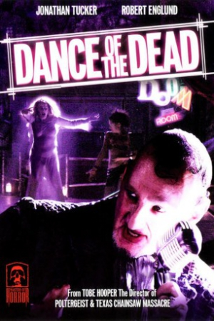

Country:Canada, 59 minutes
Spoken languages:English
Genres:Horror, Sci-Fi
Director(s):Tobe Hooper
Writer(s):Richard Christian Matheson
Video Codec:Unknown
Number: 2596


Certification:
Storyline:
In a post apocalyptic society, seventeen year-old Peggy lives with her over-protective mother and works in the family restaurant. When two couples of punks enter the restaurant, and one takes an interest in her, Peggy makes a decision that will change her life forever.
Cast:

Medium: Original DVD,
Comments: Part of: Masters of Horror - The Complete First Season
Loaned: No
Aspect ratio: Unknown